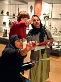

|
|
NewsAdult Learning
Whether you have a few hours to spare, or you want an opportunity for more extended study, this brochure will have something for you. With a vast range of courses reflecting the diversity of the British Museum's collections and expertise, adults of all interests and capabilities are catered for. Adult Learning - Courses, Study Days and Workshops (pdf format 400kb) |
For a complete list of adult events, courses, study days and workshops currently running at the British Museum, please download the latest Adult Learning brochure (pdf format 517kb). Printmaking: drypoint and etchingFriday 19 November, Friday 17 June14.00 - 17.00 Clore Education Centre, Studio Toni Martina, artist and tutor, demonstrates how artists like Rembrandt and Whistler made their etchings. This workshop offers a rare chance to create your own original print using drypoint and etching. Cost includes all materials. 15 placesTutor: Toni Martina £20, BM Friends and concessions £15 Exploring Native American art (Adult Learner's week)Monday 23 May10.30 - 12.30 or 14.00 - 16.00 Clore Education Centre, Studio This workshop uses objects to demonstrate tribal culture, religion and belief. Includes time in the North American Gallery. Admission free to groups of adult students on ESOL, basic skills or access courses. 20 placesAdmission free, booking by tutors through the Box Office essential African images! African objects (Adult Learner's week)Tuesday 24 May10.30 - 12.30 or 14.00 - 16.00 Clore Education Centre, Studio Develop drawing skills and experiment with different materials and media through observation of the beautiful objects in the African Galleries. Includes object handling. Admission free to groups of adult students on ESOL, basic skills or access courses. 20 placesAdmission free, booking by tutors through the Box Office essential What have the Arabs ever done for us? (Adult Learner's week)Thursday 26 May10.30 - 12.30 or 14.00 - 16.00 Clore Education Centre, Studio A lively exploration, using objects and galleries of the museum, of the important contribution of Arabs to western heritage and culture. Admission free to groups of adult students on ESOL, basic skills or access courses. 20 placesAdmission free, booking by tutors through the Box Office essential Maori art and culture: yesterday and today (Adult Learner's week)Friday 27 May10.30 - 12.30 or 14.00 - 16.00 Clore Education Centre, Claus Moser Room Join us in the Pacific section of the Enlightenment Gallery which houses a collection of Maori treasures. Your workshop leader will use objects to adorn the stories and oral histories still cherished by the people of Polynesia today. Admission free to groups of adult students on ESOL, basic skills or access courses. 20 placesAdmission free, booking by tutors through the Box Office essential Stone carvingSaturday 23 April, Saturday 25 June10.00 - 17.00 British Museum colonnade This one day workshop is designed for beginners, but can accommodate more experienced carvers. You will be introduced to tools and materials and will work on a relief carving, taking inspiration from sculptures in the Museum. We will use Bath stone or similar limestone. Participants are encouraged to arrive with ideas and sketches of projects to undertake. You will be working outside and are advised to wear old clothes. Run by Arts Express15 places £30, concessions £20 |
 Stone statue of Kurlil. From Tell al-'Ubaid, southern Iraq. Early Dynastic period, about 2500 BC
|
|||
|
home |
visit |
what's on |
join |
shop |
learning |
COMPASS |
world cultures |
sitemap |
contact us |
copyright
© The British Museum, 2002 |
|||||